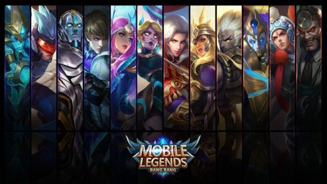
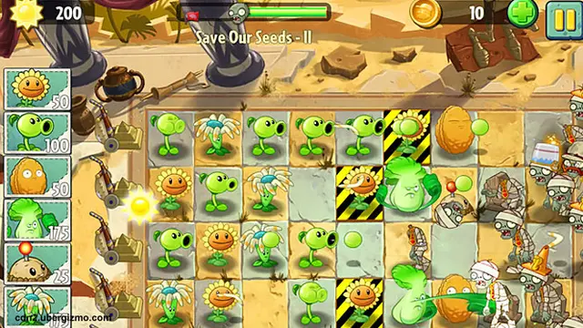

Review Game: Elden Ring

Elden Ring adalah game RPG open-world yang dikembangkan oleh FromSoftware dan diterbitkan oleh Bandai Namco Entertainment. Game ini dirilis pada 25 Februari 2022 untuk PlayStation 4, PlayStation 5, Windows, Xbox One, dan Xbox Series X/S.
Elden Ring mendapatkan banyak pujian dari para kritikus dan gamer karena gameplay-nya yang menantang, dunia yang luas dan indah, serta desain level yang kompleks. Game ini telah terjual lebih dari 12 juta kopi di seluruh dunia.
Tips dan Trik Bermain Game MOBA

MOBA (Multiplayer Online Battle Arena) adalah genre game yang sangat populer di kalangan gamer. Game MOBA biasanya dimainkan oleh dua tim yang terdiri dari 5 pemain, di mana setiap tim berusaha untuk menghancurkan basis tim lawan.
Berikut beberapa tips dan trik untuk bermain game MOBA:
- Pilih hero yang sesuai dengan gaya bermain Anda.
- Beli Recall Cetas-cetas
- Pelajari skill dan role hero Anda.
- Bekerja sama dengan tim Anda.
- Berkomunikasi dengan tim Anda.
- Jangan Surrend.
5 Game Mobile Ringan Terbaik 2024

Bagi pecinta game mobile yang tidak memiliki smartphone dengan spesifikasi tinggi, jangan khawatir! Ada banyak game mobile ringan yang seru dan menarik untuk dimainkan di tahun 2024. Berikut 5 di antaranya:
- Alto's Odyssey: The Lost City
- Crossy Road
- Minecraft
- Plants vs. Zombies
- The Battle of Polytopia